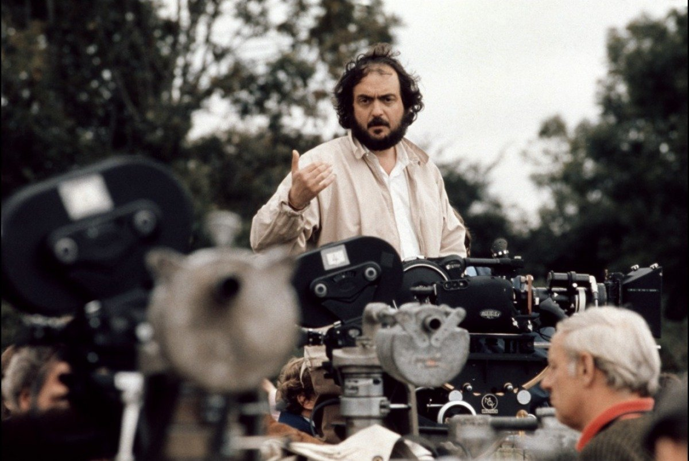
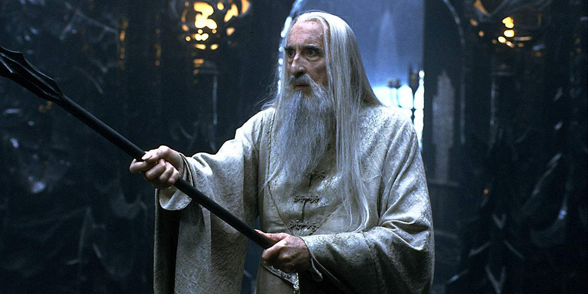
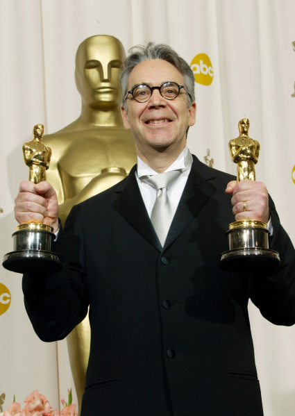
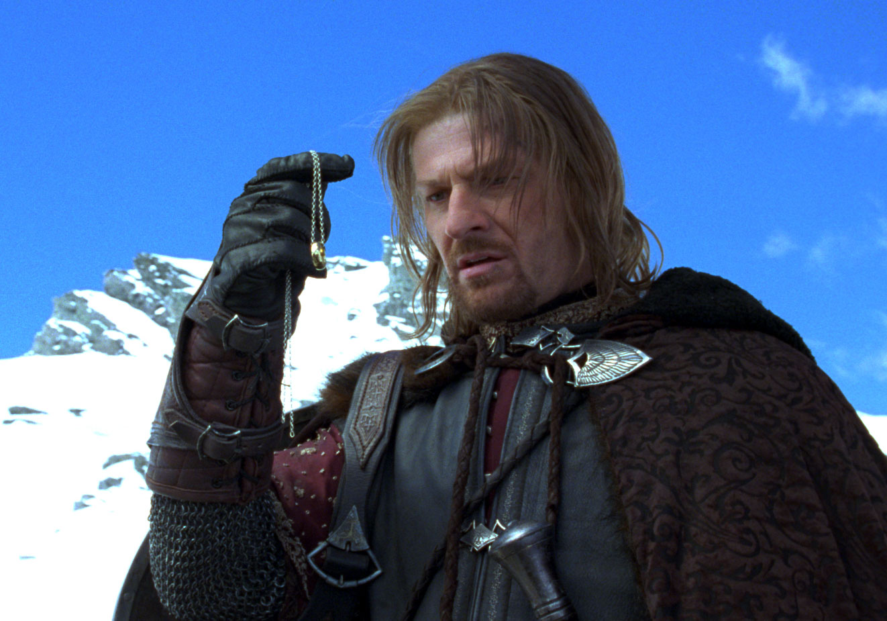
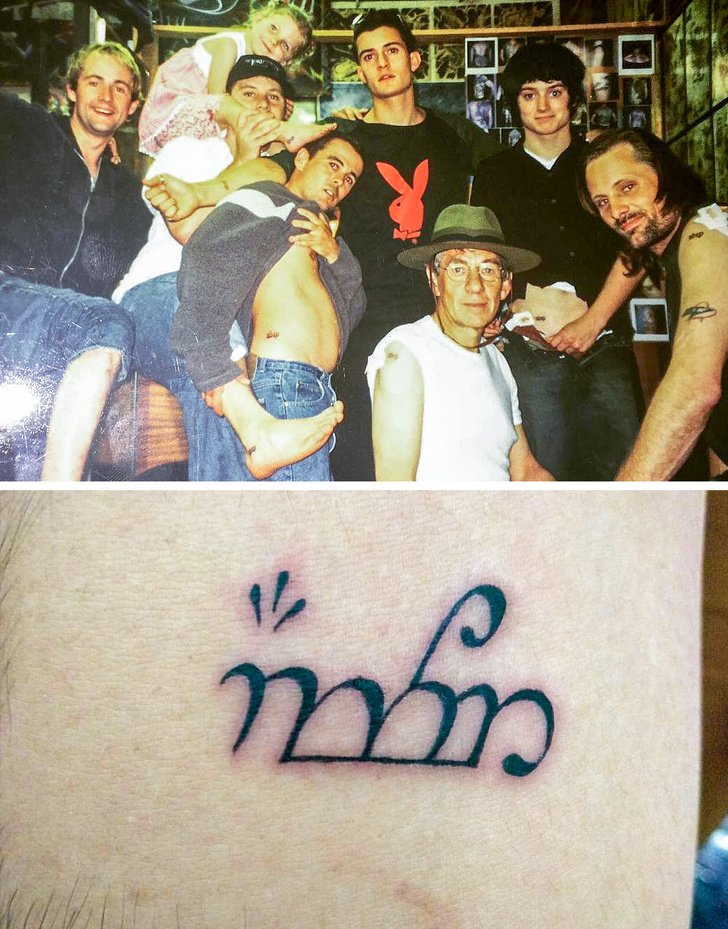

| ГЛАВНАЯ | О САЙТЕ |
"Властелин колец" — глобальная, завораживающая и удивительная трилогия о средиземье. Джон Рональд Руэл Толкиен создал глубокий и продуманный мир, а режиссёр Питер Джексон на основе произведения снял шикарный фильм, заслуживший по праву 17 премий Оскар.
Мы подготовили невероятные и интересные факты об экранизации "Властелина колец", которые вы могли не знать.
1. Стэнли Кубрик отказался снимать экранизацию с The Beatles
Эпопею Дж. Р. Р. Толкина неоднократно пытались перенести на большой экран задолго до Питера Джексона. В 1969 году права на экранизацию приобрела кинокомпания United Artists, и тогда началась история одного из самых безумных кинопроектов, который так никогда и не увидел свет. Фильмом заинтересовались участники The Beatles и даже успели распределить между собой роли. Джон Леннон должен был сыграть Голлума, Пол МакКартни — Фродо, Джордж Харрисон — Гэндальфа, а Ринго Старр — Сэма. В режиссерском кресле четверка хотела видеть не кого-нибудь, а Стэнли Кубрика. К сожалению (а может быть, и к счастью), постановщик «Космической одиссеи» посчитал адаптацию неподъемной.
2. Кристофер Ли — главный поклонник творчества Толкина
Любопытно, что Гэндальфа мог сыграть и сэр Кристофер Ли, в итоге получивший роль Сарумана. Ли был единственным участником съемочной группы, который лично встречался с Толкином, а также, возможно, самым большим фанатом его книг. Впервые он прочитал сагу сразу же после ее публикации в 1954 году, а позже называл ее высочайшим литературным достижением. Поговаривают, что легендарный актер перечитывал «Властелина колец» ежегодно.
3. Саундтрек трилогии признали лучшим в истории
Неотъемлемой частью «Властелина колец» является оригинальный саундтрек, сочиненный Говардом Шором. И работа, которую он проделал, оказалась действительно титанической. К моменту завершения создания третьего фильма ему приходилось писать каждый день по семь минут музыки. Столь изнуряющая работа была награждена по достоинству. Шор получил три премии «Оскар», а в 2015 году слушатели признали саундтрек лучшим в истории.
4. Шон Бин ходил на съемки пешком
Шон Бин страдал аэрофобией, о чем прознали исполнители роли Мэри и Пиппина Билли Бойд и Доминик Монахэн. Видимо, уже войдя в свои роли, они решили подшутить над коллегой, который все-таки согласился на перелет, и попросили пилота «показать, на что способен вертолет». С тех пор Бин ходил на отдаленные локации пешком. Для этого ему приходилось вставать на несколько часов раньше других и пробираться через горы. Разумеется, уже в доспехах и с оружием Боромира.
5. Звезды фильма сделали одинаковые татуировки
Продолжительный процесс съемок по-настоящему сблизил исполнителей главных ролей. Чтобы память о работе над сагой осталась с ними навсегда, актеры, сыгравшие участников Братства кольца, сделали одинаковые татуировки со словом «девять» на эльфийском языке. Идея принадлежала Вигго Мортенсену, который, получив согласие коллег, связался с тату-мастером и предоставил ему эскизы. При этом Мортенсен не предупредил татуировщика, что скоро к нему заглянут звезды «Властелина колец» в столь большом составе, поэтому можно представить, насколько он был рад.
Эти и другие факты можно прочитать по ссылке.
Также можете ознакомиться с фактами по другим франшизам: